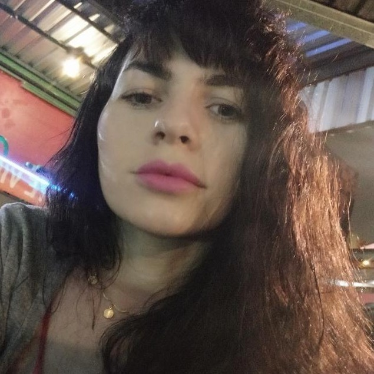

Sobre mim

Graduando em Análise e Desenvolvimento de Sistemas e graduada em Gestão De Políticas Públicas,
Atuo na área de tecnologia com rotinas de Supervisor de TI, supervisionando as atividades de suporte de Software, acompanhamento de projetos, implantação e homologação.
Atuo ainda com Análise de demandas, mapeamento de processos, identificação de BUGS,
acompanhamento de resultados da equipe, treinamentos e reciclagens referente as mudanças e atualizações.
Tenho conhecimento em linguagem de programação, SQLServer e ferramentas como Power BI, Insomnia e outras.
Atualmente, cursando Inglês.
5 Projetos e trabalhos sociais que já fiz ou participei
- Anjo da TI - Lider Discente
- Favela Tech - Lider Discente
- autotroubleshoot, Automação baixa de mensalidades pagas - Python
- Identificando coordenadas - Python
- Girls In Tech - Lider Discente, conheça nossa página no Instagram
Objetivos
Meu objetivo é ingressar no desenvolvimento de Software, fechar parcerias e continuar ajudando jovens em situações de vulnerabilidade, transmitindo conhecimentos relacionados a tecnologia para que tenham condições de ingressar no mercado de traballho.
Amo desafios, aprender coisas novas e tudo que envolve tecnologia.
🙋🏻♀️ Meu GitHub:Aqui óh
🙋🏻♀️ Meu LINKEDIN
Aquih